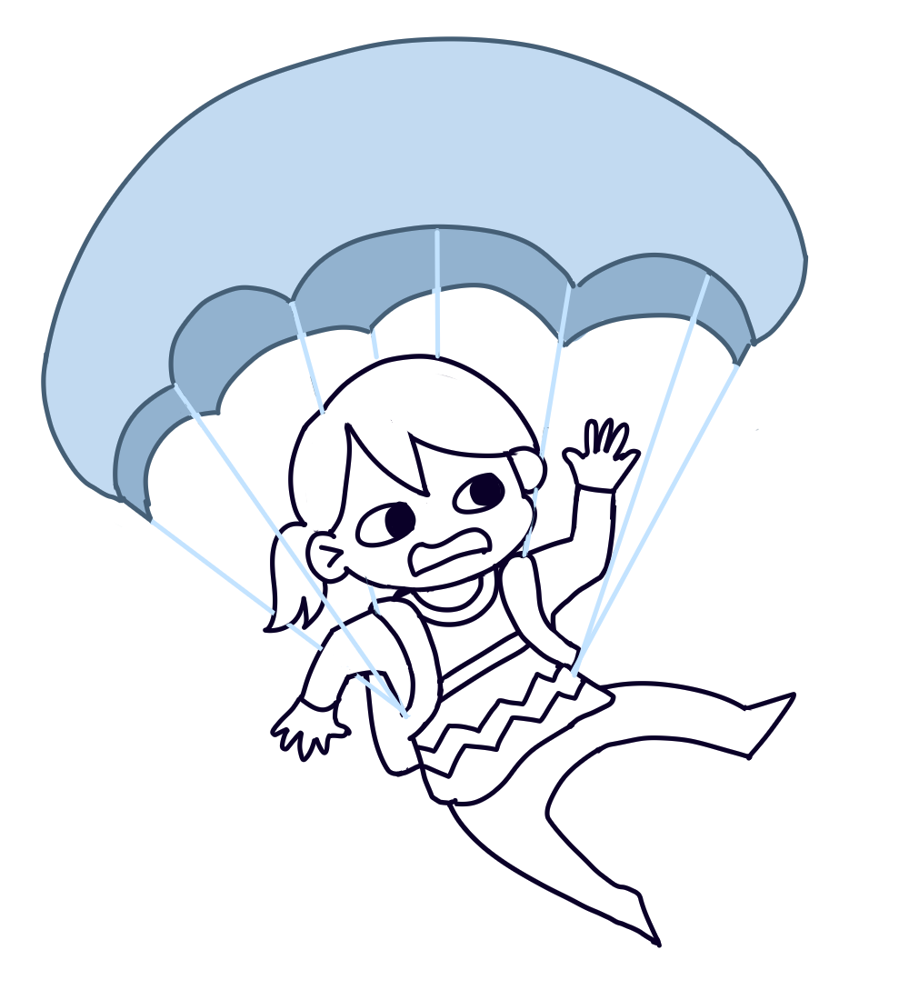
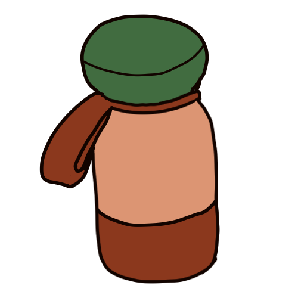
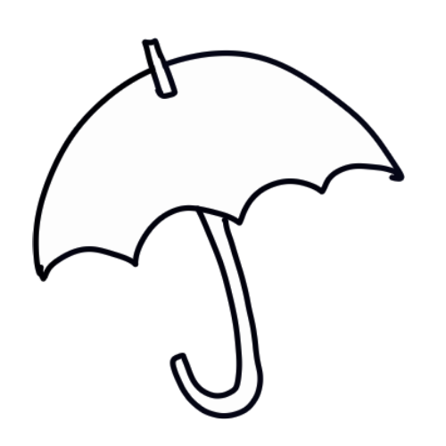
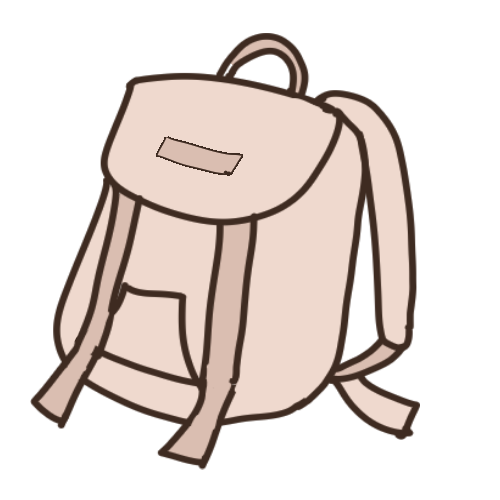
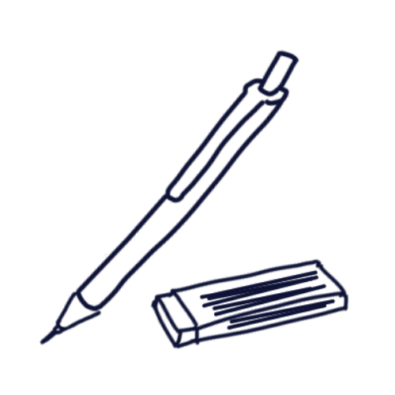
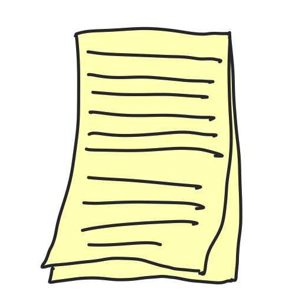
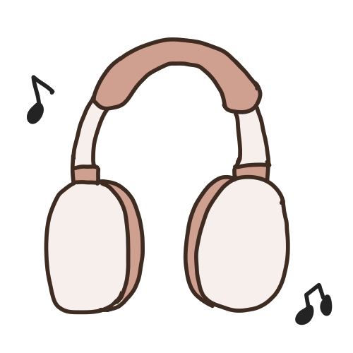
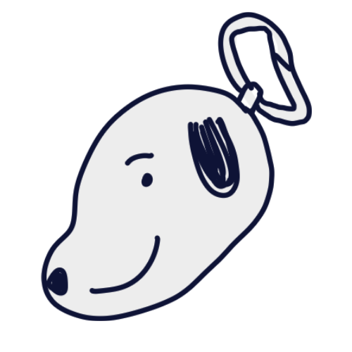
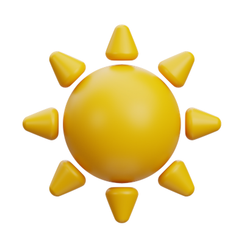

As a college student, having a water bottle is essential for staying hydrated throughout the day, especially during long study sessions or classes.

With the unpredictable weather, having a UV umbrella is perfect for both rainy and sunny days.
Commuting and sudden rain without an umbrella is not fun!

Some students can live without a bag at college, I can’t! Where will I put all my heavy must-haves?! My cream-colored hawk-bag is spacious and has convenient side pockets for my top 2 items.

As a student who loves to write and draw, a mechanical pencil is a must-have for me. It allows for precise writing and sketching, making it perfect for taking notes and creating art.

Teachers: Please bring out one sheet of Yellow pad paper
Classmate: Pwede pa hingi ten?
Me: (Sa hininga) To give and not to count the cost. (Normal): Okiieeee!

As a college student, having headphones is essential for blocking out distractions and creating a focused environment for studying or attending online classes. My headphones are perfect for immersing myself in music or lectures without any interruptions.

As a college student, having a coin purse is essential for keeping small items organized and easily accessible. My cute snoopy coin purse is perfect for storing coins, keys, and other small essentials.

As a member of the ADNU Tactics External Affairs team, I am responsible for seeking out sponsors for my College department's events and initiatives.
As a staff member of the Triump College Yearbook System, I am responsible for managing and organizing the organization's systems and databases, ensuring that all information is accurate and up-to-date.
As the Chief Technology Officer of the Ateneo Business Circle, I was responsible for overseeing the organization's technology strategy and implementation, ensuring that all systems and platforms were secure, efficient, and effective.
As the Treasurer of the Writers' Guild, I was responsible for managing the organization's finances, including budgeting, fundraising, and financial reporting.
As a member of the ADNU Peer Volunteers, I participated in various committees in various events to help make a positive impact in the local community.